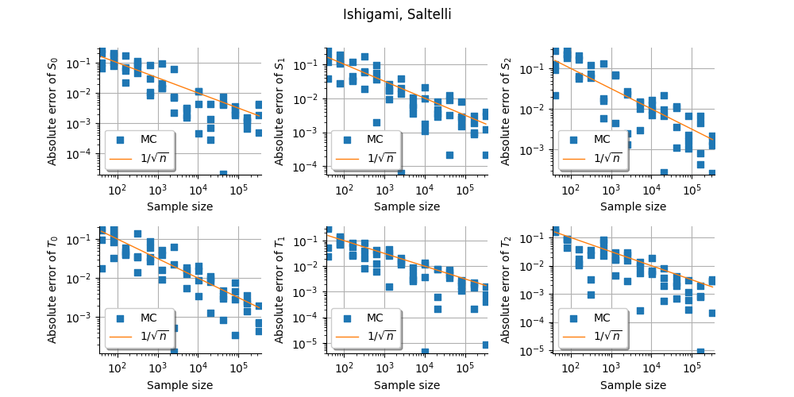
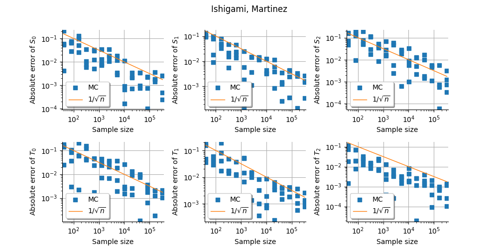
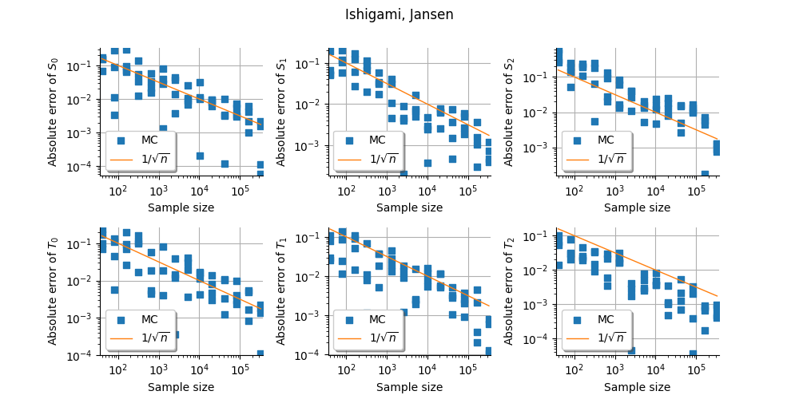
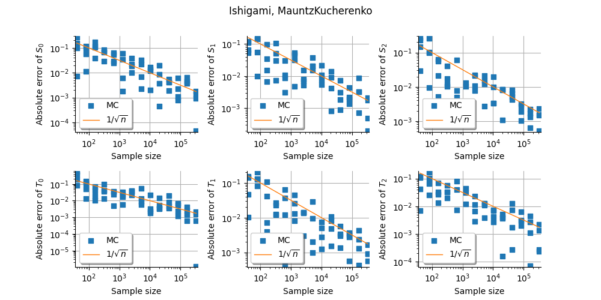
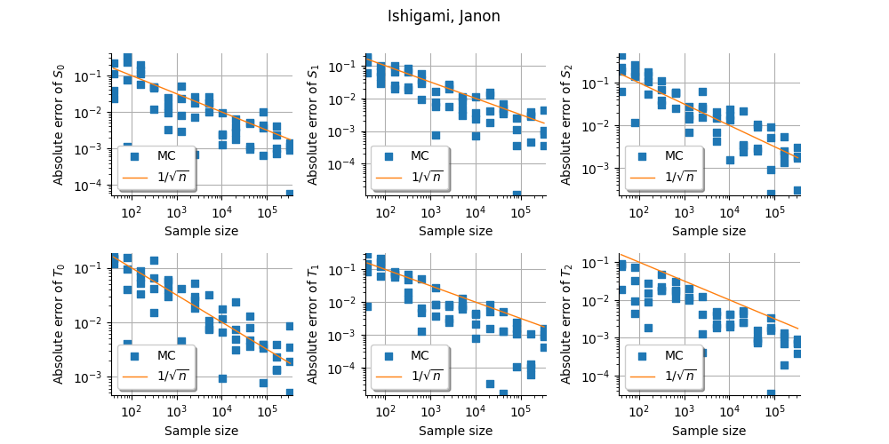

Note
Go to the end to download the full example code.
Convergence of estimators on Ishigami¶
In this example, we present the convergence of the sensitivity indices of the Ishigami test function.
We compare different estimators. * Sampling methods with different estimators: Saltelli, Mauntz-Kucherenko, Martinez, Jansen, * Sampling methods with different design of experiments: Monte-Carlo, LHS, Quasi-Monte-Carlo, * Polynomial chaos.
import openturns as ot
import otbenchmark as otb
import openturns.viewer as otv
import numpy as np
When we estimate Sobol’ indices, we may encounter the following warning messages:
`
WRN - The estimated first order Sobol index (2) is greater than its total order index...
WRN - The estimated total order Sobol index (2) is lesser than first order index ...
`
Lots of these messages are printed in the current Notebook. This is why we disable them with:
ot.Log.Show(ot.Log.NONE)
problem = otb.IshigamiSensitivity()
print(problem)
name = Ishigami
distribution = ComposedDistribution(Uniform(a = -3.14159, b = 3.14159), Uniform(a = -3.14159, b = 3.14159), Uniform(a = -3.14159, b = 3.14159), IndependentCopula(dimension = 3))
function = ParametricEvaluation([X1,X2,X3,a,b]->[sin(X1) + a * sin(X2)^2 + b * X3^4 * sin(X1)], parameters positions=[3,4], parameters=[a : 7, b : 0.1], input positions=[0,1,2])
firstOrderIndices = [0.313905,0.442411,0]
totalOrderIndices = [0.557589,0.442411,0.243684]
distribution = problem.getInputDistribution()
model = problem.getFunction()
Exact first and total order
exact_first_order = problem.getFirstOrderIndices()
print(exact_first_order)
exact_total_order = problem.getTotalOrderIndices()
print(exact_total_order)
[0.313905,0.442411,0]
[0.557589,0.442411,0.243684]
Perform sensitivity analysis¶
Create X/Y data
ot.RandomGenerator.SetSeed(0)
size = 10000
inputDesign = ot.SobolIndicesExperiment(distribution, size).generate()
outputDesign = model(inputDesign)
Compute first order indices using the Saltelli estimator
sensitivityAnalysis = ot.SaltelliSensitivityAlgorithm(inputDesign, outputDesign, size)
computed_first_order = sensitivityAnalysis.getFirstOrderIndices()
computed_total_order = sensitivityAnalysis.getTotalOrderIndices()
Compare with exact results
print("Sample size : ", size)
# First order
# Compute absolute error (the LRE cannot be computed,
# because S can be zero)
print("Computed first order = ", computed_first_order)
print("Exact first order = ", exact_first_order)
# Total order
print("Computed total order = ", computed_total_order)
print("Exact total order = ", exact_total_order)
Sample size : 10000
Computed first order = [0.302745,0.460846,0.0066916]
Exact first order = [0.313905,0.442411,0]
Computed total order = [0.574996,0.427126,0.256689]
Exact total order = [0.557589,0.442411,0.243684]
dimension = distribution.getDimension()
Compute componentwise absolute error.
first_order_AE = ot.Point(np.abs(exact_first_order - computed_first_order))
total_order_AE = ot.Point(np.abs(exact_total_order - computed_total_order))
print("Absolute error")
for i in range(dimension):
print(
"AE(S%d) = %.4f, AE(T%d) = %.4f" % (i, first_order_AE[i], i, total_order_AE[i])
)
Absolute error
AE(S0) = 0.0112, AE(T0) = 0.0174
AE(S1) = 0.0184, AE(T1) = 0.0153
AE(S2) = 0.0067, AE(T2) = 0.0130
metaSAAlgorithm = otb.SensitivityBenchmarkMetaAlgorithm(problem)
for estimator in ["Saltelli", "Martinez", "Jansen", "MauntzKucherenko", "Janon"]:
print("Estimator:", estimator)
benchmark = otb.SensitivityConvergence(
problem,
metaSAAlgorithm,
numberOfRepetitions=4,
maximum_elapsed_time=2.0,
sample_size_initial=20,
estimator=estimator,
)
grid = benchmark.plotConvergenceGrid(verbose=False)
view = otv.View(grid)
figure = view.getFigure()
_ = figure.suptitle("%s, %s" % (problem.getName(), estimator))
figure.set_figwidth(10.0)
figure.set_figheight(5.0)
figure.subplots_adjust(wspace=0.4, hspace=0.4)
- 
- 
- 
- 
- 
Estimator: Saltelli
Estimator: Martinez
Estimator: Jansen
Estimator: MauntzKucherenko
Estimator: Janon
benchmark = otb.SensitivityConvergence(
problem,
metaSAAlgorithm,
numberOfRepetitions=4,
maximum_elapsed_time=2.0,
sample_size_initial=20,
estimator="Saltelli",
sampling_method="MonteCarlo",
)
graph = benchmark.plotConvergenceCurve()
_ = otv.View(graph)
grid = ot.GridLayout(1, 3)
maximum_absolute_error = 1.0
minimum_absolute_error = 1.0e-5
sampling_method_list = ["MonteCarlo", "LHS", "QMC"]
for sampling_method_index in range(3):
sampling_method = sampling_method_list[sampling_method_index]
benchmark = otb.SensitivityConvergence(
problem,
metaSAAlgorithm,
numberOfRepetitions=4,
maximum_elapsed_time=2.0,
sample_size_initial=20,
estimator="Saltelli",
sampling_method=sampling_method,
)
graph = benchmark.plotConvergenceCurve()
# Change bounding box
box = graph.getBoundingBox()
bound = box.getLowerBound()
bound[1] = minimum_absolute_error
box.setLowerBound(bound)
bound = box.getUpperBound()
bound[1] = maximum_absolute_error
box.setUpperBound(bound)
graph.setBoundingBox(box)
grid.setGraph(0, sampling_method_index, graph)
_ = otv.View(grid)

Use polynomial chaos.
benchmark = otb.SensitivityConvergence(
problem,
metaSAAlgorithm,
numberOfExperiments=12,
numberOfRepetitions=1,
maximum_elapsed_time=5.0,
sample_size_initial=20,
use_sampling=False,
total_degree=20,
hyperbolic_quasinorm=1.0,
)
graph = benchmark.plotConvergenceCurve(verbose=True)
graph.setLegendPosition("bottomleft")
_ = otv.View(graph)
Elapsed = 0.0 (s), Sample size = 40
Elapsed = 0.0 (s), Sample size = 80
Elapsed = 0.1 (s), Sample size = 160
Elapsed = 0.6 (s), Sample size = 320
Elapsed = 3.1 (s), Sample size = 640
Elapsed = 18.60 (s)
otv.View.ShowAll()
Total running time of the script: (0 minutes 50.441 seconds)